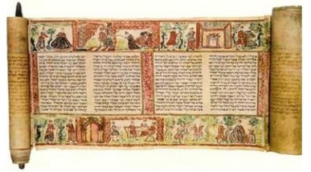

Greek-speaking Jews need a translation of the Bible into Greek, the Septuagint, in which certain liberties are taken: themes of the after-life are introduced; Proverbs is translated very freely; certain factual inconsistencies emerge: the enemies of Israel, who had been Aramaeans and Philistines are now Syrians and coastal Greek cities; words assume new meanings; there is a reluctance to refer to anthropomorphism - in Isaiah 38:11 ‘the Lord’ becomes ‘salvation,’ Exodus 24:10 ‘the Lord’ becomes ‘the place’; mistakes abound: Isaiah 7:14 ‘alma - young woman’ becomes ‘parthenos - virgin.’ This one error alone leads to millennia of creative theologizing). Some Jewish scholars contend that only the Pentateuch is translated under divine guidance, hence only those translations are accurate.

One egregious example of rampant translation error is Isaiah Chapter Three, in which there are 41 translation errors. I have highlighted only a few verses below. My favorite is ‘transparent Spartan dresses’ for ‘crisping pins.’
The format below is: Hebrew Masoretic Text, King James Version (generally correct), Septuagint (often errant), Septuagint in English
Isaiah Chapter Three
כ הַפְּ אֵ רִ ים וְּ הַצְּ עָדֹות וְּ הַקִ שֻּׁרִ ים ּובָתֵ י הַנֶּפֶּׁש וְּ הַלְּחָ ׁשִ ים
20 The bonnets, and the ornaments of the legs, and the headbands, and the tablets, and the earrings, (five items)
20 καὶ τὴν σύνθεσιν τοῦ κόσμου τῆς δόξης καὶ τοὺς χλιδῶνας, καὶ τὰ ψέλια καὶ τὸ ἐμπλόκιον καὶ τὰ περιδέξια καὶ τοὺς δακτυλίους καὶ τὰ ἐνώτια
20 and the array of glorious ornaments, and the armlets, and the bracelets, and the wreathed work, and the finger-rings, and the ornaments for the right hand, (six items)
כב הַמַ חֲלָצֹות וְּ הַמַ עֲטָ פֹות וְּ הַמִ טְּ פָחֹות וְּ הָחֲרִ יטִ ים
22 The changeable suits of apparel, and the mantles, and the wimples, and the crisping pins,(four items)
22 καὶ τὰ ἐπιβλήματα τὰ κατὰ τὴν οἰκίαν καὶ τὰ διαφανῆ Λακωνικὰ
22 and the garments with purple grounds, and the shawls to be worn in the house, and the Spartan transparent dresses, (three items)
כג וְּ הַגִלְּיֹנִים וְּ הַסְּ דִ ינִים וְּ הַצְּ נִיפֹות וְּ הָרְּ דִ ידִ ים
23 The mirrors, and the fine linen, and the hoods, and the veils. (four items)
23 καὶ τὰ βύσσινα καὶ τὰ ὑακίνθινα καὶ τὰ κόκκινα καὶ τὴν βύσσον, σὺν χρυσῷ καὶ ὑακίνθῳ συγκαθυφασμένα καὶ θέριστρα κατάκλιτα.
23 and those made of fine linen, and the purple [ones], and the scarlet [ones], and the fine linen, interwoven with gold and purple, and the light coverings for couches. (six items)
~~~~~~~~